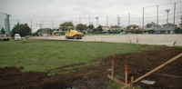
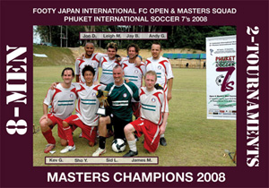

Clash Get First Win for New Sponsor
Hachioji Park, Sunday 21st December
On a balmy December night in Saitama the Clash earned a long overdue first victory of the season by defeating the Dutch 2-1 in a hard fought encounter. Following a missed penalty from the Dutch, Andy Gill opened the scoring for the Clash with a stunning goal midway through the first half. It was 2-0 at the break after Rob Keyworth coolly put away a back-post header. more ...
AW.
Oranje? Looks More Like Mikan to Me
OiFuto Dai Ni, Saturday 13th December
36, 40, 44, 52, 41, 42, 48, 35, 42, 23, 47. No, it's not the bust measurements of the finalists in the Miss Pneumatic Universe contest (How did the near-death anorexic Miss 23 get in there? Has Miss 52 got a MySpace page?), no, actually it's the ages for the starting line-up that the appropriately named Albion Old Boys put out in their magnificently gutsy 2-1 win over the appallingly mis-named Dutch Embassy F.C. more ...
TC.
Hibs Open 11pt Gap Over BFC
Hachioji Park, Saturday 13th December
BFC went into this game confident that if we played our best we could beat the in-form Hibs. Instead, we came away with nothing, although, to a man, you couldn't fault the effort. It was a massive game for both clubs and everyone knew what was at stake. If BFC lost so they lost their title. more ...
JM.
We Want Our Title Back
|  |
|
YCAC will soon have it's new AWS Field. More
|
Hachioji Park, Saturday 13th December
With the usual writer Bevan swapping the sun and beaches of Phuket for stupid amounts of snow in Hokkaido, the match reports from Hibs have become non-existent. The obvious choice to step up and do them would be our very own journo, Jay, but he seems to be a bit too busy entertaining his pet cat, or more likely on his own prowl in Roppongi or wherever it is you go to look for girls of the loose variety. more ...
JS.
Vags Fail to Reach Zion
Hodogaya Koen, Saturday 6th December
Sixteen consenting Vagabonds passed up the chance to go a-berrying and a-mushrooming in the woods on this fine autumn day for a 9am game against Zion. They may still be regretting that choice, losing 3-5 in what was probably their most disorganized performance so far this season. more ...
JM.
8 BRAVE MEN, 2 PUNISHING TOURNAMENTS, 1 GREAT TOUR.
Footy Japan International FC, Sponsored by Robert Walters
Phuket International 7's Open & Masters Competition
29th/30th November, FIFA Tsunami Memorial ground, Phuket, Thailand
Having just 1 sub, for a 7-a-side tournament is hard work.
Add to that some quality opposition, searing Thai heat and the fact that the same 8 man squad would have to play in two competitions, both Open and Masters simultaneously, and the job quickly evolved from laborious to one of utter insanity. more ...
FJ.
Hibs Phuket Champions 2006, 2007 and 2008, Three Peat!
Well we did it! Winning not only the tournament but the Fair Play award too. A small but strong squad of Hibs players made the trip down to Phuket for the 7s tournament again this year. more ...
BC.
|